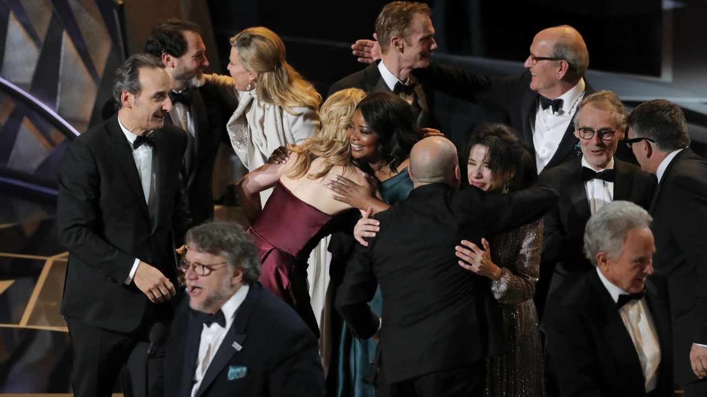
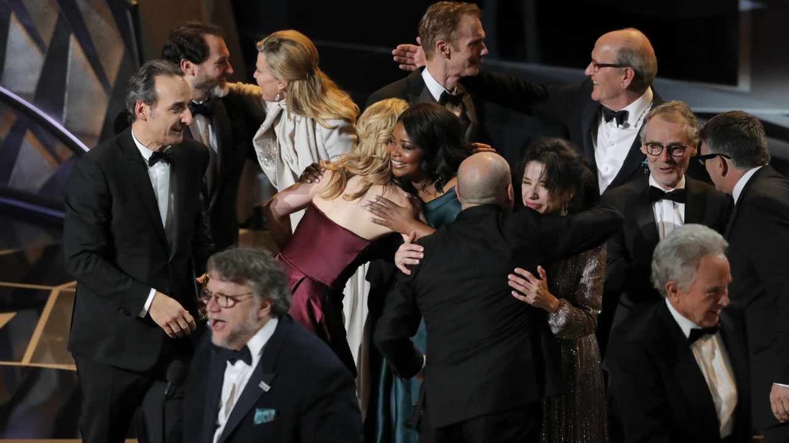
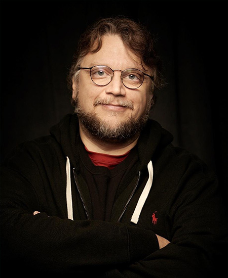
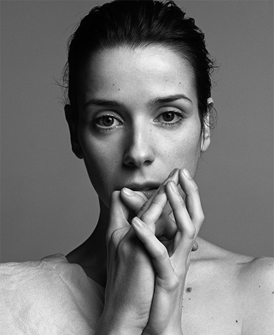
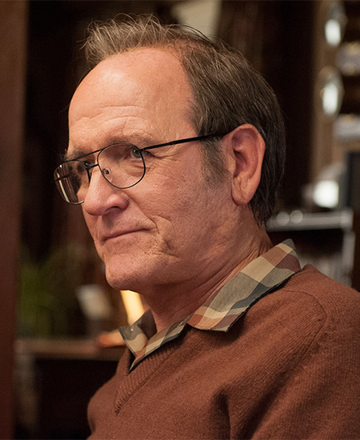
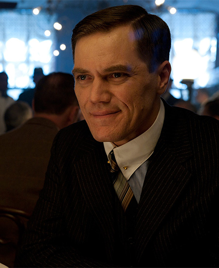
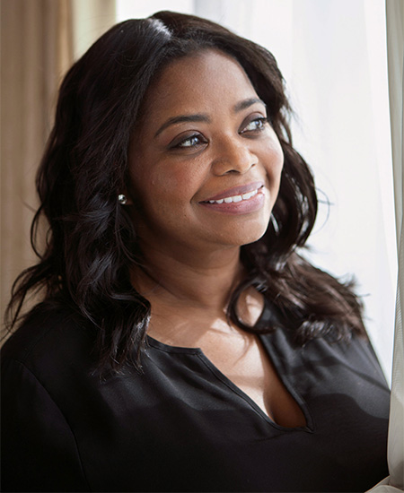

-  Guillermo del Toro
-  Sally Cecilia Hawkins
-  Richard Dale Jenkins
-  Michael Corbett Shannon
-  Octavia Lenora Spencer
-
Guillermo del Toro Gómez (born October 9, 1964) is a Mexican filmmaker, author, actor, and former special effects makeup artist. He is best known for the Academy Award-winning fantasy films The Shape of Water (2017), winning the Oscars for Best Director and Best Picture for the latter.
Throughout his career, del Toro has shifted between personal, lower-budget Spanish language films, such as Cronos (1993) and The Devil's Backbone (2001), and Hollywood tentpoles, including Mimic (1997), Blade II (2002), Hellboy (2004) and its sequel Hellboy II: The Golden Army (2008), Pacific Rim (2013), and Crimson Peak (2015). As a producer and/or writer, he worked on The Orphanage (2007), Don't Be Afraid of the Dark (2010), The Hobbit film series (2012–14), Mama (2013), The Book of Life (2014), Pacific Rim: Uprising (2018), and Scary Stories to Tell in the Dark (2019).
-
Sally Cecilia Hawkins (born 27 April 1976) is an English actress. She is the recipient of numerous accolades including a Golden Globe Award and the Silver Bear for Best Actress, and has been nominated for two Academy Awards.
After graduating from the Royal Academy of Dramatic Art, Hawkins started her career as a stage actor in productions such as Romeo and Juliet (playing Juliet), Much Ado About Nothing, and A Midsummer Night's Dream. Her first major role was in Mike Leigh's All or Nothing in 2002. She continued working with Leigh, appearing in a supporting role in Vera Drake (2004) and taking the lead in Happy-Go-Lucky (2008), for which she won several awards, including the Golden Globe Award for Best Actress in a Motion Picture – Musical or Comedy and the Silver Bear for Best Actress.
-
Richard Dale Jenkins (born May 4, 1947) is an American actor. Jenkins began his acting career in theater at the Trinity Repertory Company and later made his film debut in 1974. He has worked steadily in film and television since the 1980s, mostly in supporting roles.
He won the Primetime Emmy Award for Outstanding Lead Actor in a Miniseries or a Movie for the limited drama series Olive Kitteridge (2014). For his performance in the fantasy drama film The Shape of Water (2017), Jenkins received Academy Award, Golden Globe and Screen Actors Guild Award nominations for Best Supporting Actor.
-
Michael Corbett Shannon (born August 7, 1974)is an American actor, producer, director, and musician. He is also known for his role as Nelson Van Alden in the HBO period drama series Boardwalk Empire (2010–2014), for which he was nominated for three Screen Actors Guild Awards.
He has been nominated twice for the Academy Award for Best Supporting Actor for his roles in Revolutionary Road (2008) and Nocturnal Animals (2016). He earned Screen Actors Guild Award and Golden Globe Award nominations for his role in 99 Homes (2014), and a Tony Award nomination for Best Featured Actor in a Play for Long Day's Journey into Night (2016).
-
Octavia Lenora Spencer (born May 25, 1970) is an American actress, author, and producer. She is the recipient of several accolades, including an Academy Award, a Golden Globe Award, and three Screen Actors Guild Awards.
Spencer made her film debut in the 1996 drama A Time to Kill. Following a decade of brief roles in film and television, her breakthrough came in 2011, when she played a maid in 1960s America in The Help, for which she won several awards, including the Academy Award for Best Supporting Actress. For her performance in Ryan Coogler's biopic Fruitvale Station (2013), she won the National Board of Review Award for Best Supporting Actress.